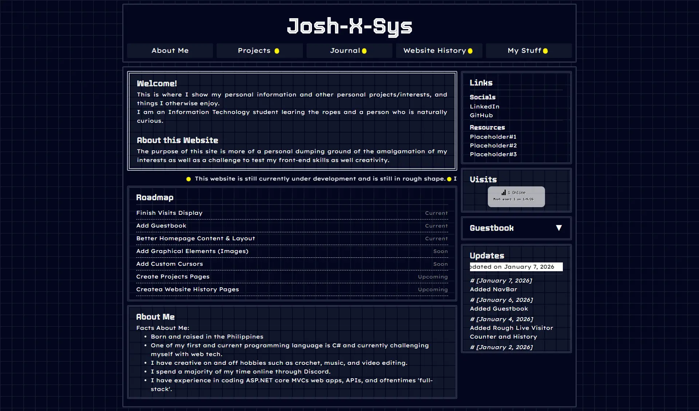
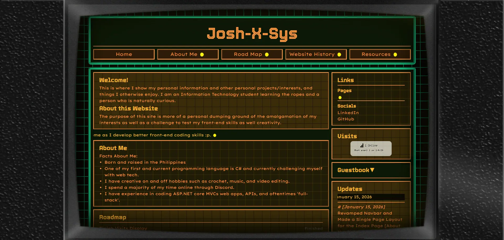

Josh-X-Sys
Welcome!
This is where I show my personal information and other personal projects/interests, and things I otherwise enjoy. I am an Information Technology student learning the ropes and a person who is naturally curious.
About this Website
The purpose of this site is more of a personal dumping ground of the amalgamation of my interests as well as a challenge to test my front-end skills as well as my creativity.
About Me
Facts About Me:
- Born and raised in the Philippines
- One of my first and current programming language is C# and currently challenging myself with web tech.
- I have creative on and off hobbies such as crochet, music, and video editing.
- I spend a majority of my time online through Discord.
- I have experience in coding ASP.NET core MVCs web apps, APIs, and 'full-stack'.
Roadmap
- Finish Visits DisplayFinished
- Add GuestbookFinished
- Better Homepage Content & LayoutFinished
- Create Road Map TabCurrent
- Create Website History TabCurrent
- Create About Me TabSoon
- Add Custom CursorsSoon
- Add Graphical Elements (Images)Upcoming
- Create Projects PagesUpcoming
- Create Interests PagesUpcoming
About Me
About Me page
Road Map
This is not completely accurate to my intentions of the website since I'm more spontaneous with my ideas rather than a completely planned out structure. This serves to give out my clearer intentions with the directions I want to take this website.
Upcoming
- Add Graphical Elements (Images)Upcoming
- Create Projects PagesUpcoming
- Create Interests PagesUpcoming
Finished
- Finish Visits DisplayFinished
- Add GuestbookFinished
- Better Homepage Content & LayoutFinished
Soon
- Create About Me TabSoon
- Add Custom CursorsSoon
Current
- Create Road Map TabCurrent
- Create Website History TabCurrent
History
This display both major and minor changes made to the website. This will show the evolution of my website as I further fine-tune my front-end skills and creativity.
January 2026
2nd - 7th
The first initial design had a dark blue but I felt it lack personality. It was inspired by other sites I've seen on nekoweb which gave the idea to include the live counter and other small noteable features such as : update box, visitor counters, guestbook, and the navbar.

11th - 17th
After being satisfied with the overall structure of the website, I decided to completely change the color palette to orange and cyan and go for a retroesque style. During this time frame I've also added an overlay which fitted nicely with my UI which later replaced by my original work using photopea. I also finally made a one page setup with the navbar being able to switch to pages as well as changing the navbar content itself. Finally on the 17th content for resources and roadmap were added.

18th - Current
Finally added the content and images on the website to help develop this history page.
Resources
This is where I dump any website that I find interesting, cool, or just helpful. I have a trello board to compile and sort them by category and the ones displayed here are more for a quick link hub.
w3schools
w3 is a free online platform that teaches HTML, CSS, and many more. This is where I taught myself how to make this very website.
Photopea
Photopea is a free online alternative to photoshop where I made my assets to edit and create images from scratch.
Davinci Resolve
A free video editing software alternative to adobe premiere and my go to video editing software.
Fadr
Split audio into 4 different tracks for free and download as files for any use case.
Openguesr
Too broke to purchase a Geoguesr account so I just play this free alternative.
Visits

Updates
# [January 18, 2026] Added content for History Page
# [January 17, 2026] Added content for Resources and Road Map Page
# [January 15, 2026] Revamped Navbar and Made a Single Page Layout for the Index Page [About Me, Road Map, Website History, Resources]
# [January 14, 2026] Changed Overlay Asset to Origial Image
# [January 12, 2026] Added Experimental Overlay Preset [Asset by eatkinola]
# [January 11, 2026] Overhaul Index Color Palette
# [January 7, 2026] Added NavBar
# [January 6, 2026] Added Guestbook
# [January 4, 2026] Added Live Visitor Counter and History
# [January 2, 2026] Added This Update Box